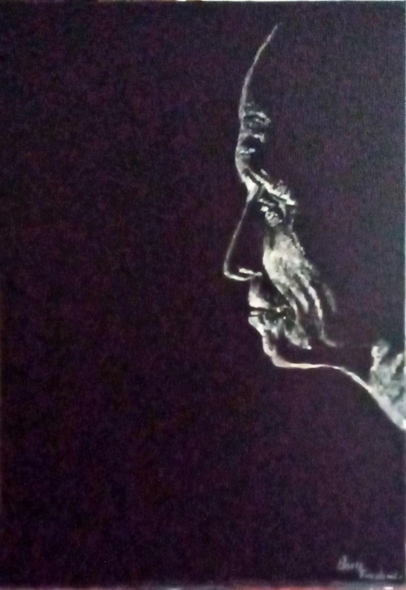
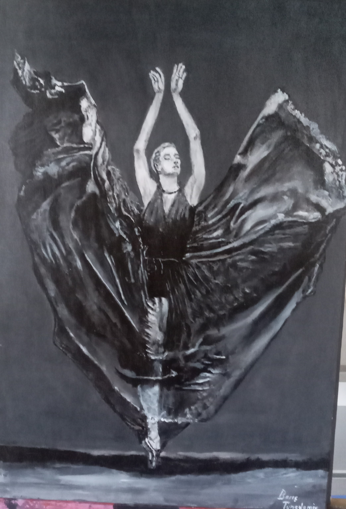
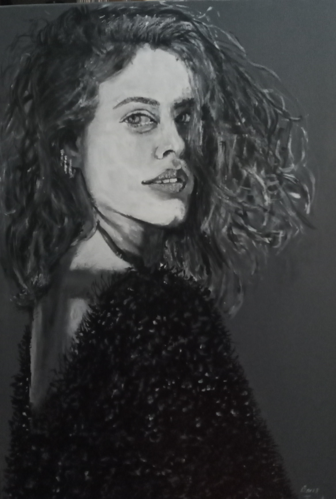
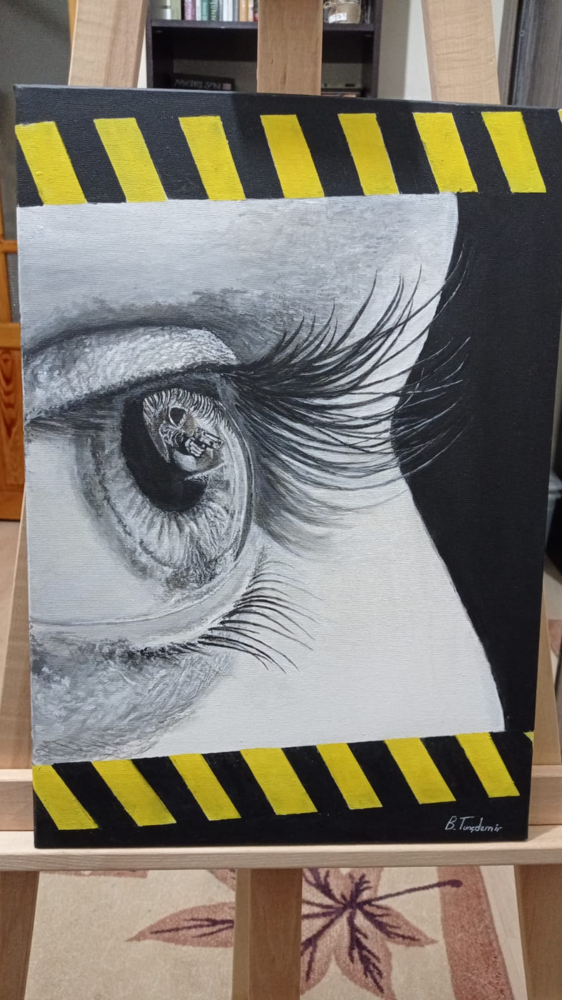

çizimlerim






Merhaba ben Barış Tunçdemir. İstanbulda yaşıyorum. Ondokuz Mayıs Üniversitesi Harita Mühendisliğinden bu sene mezun oldum. 2 yıl önce kodlamaya başladım ve bu maceramda Front End ile tanıştım. Pandemi döneminde ilgi alanlarım arasına giren çizim ve tasarıma olan ilgim beni bu noktaya kadar getirdi.
ilgi alanlarıma yukarıda bahsettiğim üzere resim çizmek müzik dinlemek ve film izlemek giriyor
Aslında çizime pandemi döneminde merak sardım ve 2019 2021 yılları arasında 33 tablo çizdim birinden de ödül aldım. boş zamanımı resim çizerek değerlendirmek beni farklı noktalara getirdi.